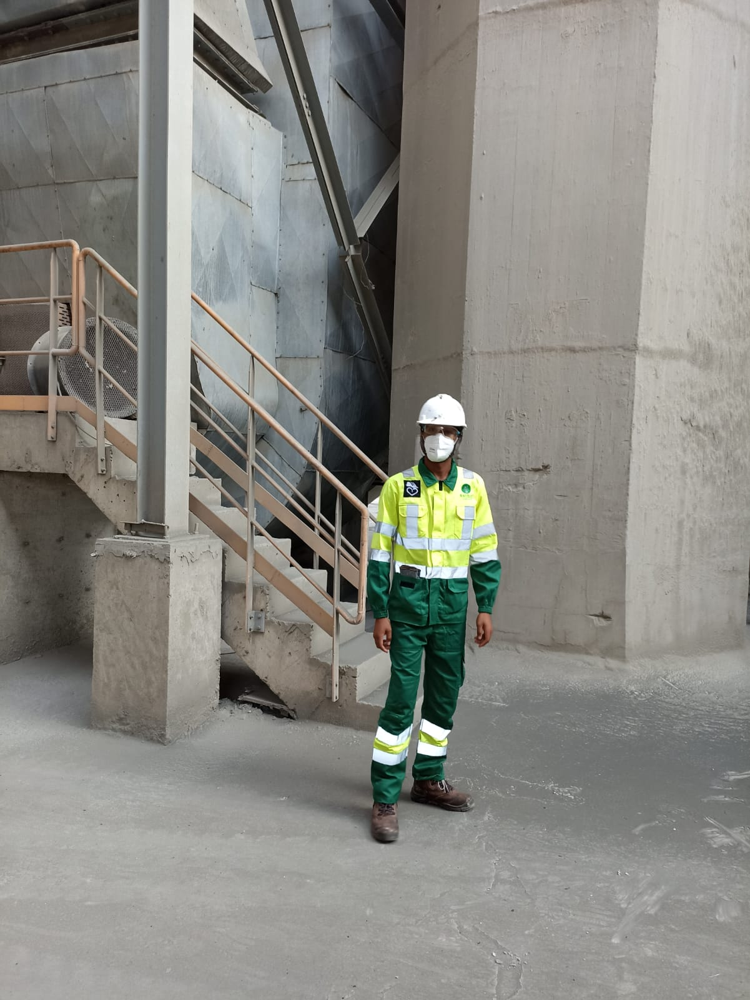

|  |
Thindiu Keely NjorogeMechatronics engineer |
I am a self-motivated, focused individual whose aim is to improve current existing systems in any way possible. I believe learning is a step by step process which when done properly can yield unimaginable results hence ease mankind’s day to day activities.
| Year | Work |
|---|---|
| Sept 2021- Dec 2021: | Attachment at Kenya Power and Lighting Company. I interacted with different company-based software such as SAP understanding the general working principle of them as well as their importance in the day to day operations of the company. |
| Nov 2017- Feb 2017: | Technical assistant in Kenya Tea Development Agency Holdings We dealt with the repair of faulty components in processing, replacement of worn out parts and troubleshooting electrical appliances in order to determine the root cause of failure. |
Nov 2022- current: |
Mechanical Maintenance intern in Bamburi Cement Limited(BCL) Till date, we deal with the mechanical maintenance of various equipment essential in the day to day running of the company. Some of the skills acquired are: Laser alignment of motor shaft and it gears. Ultrasonic Nondestructive Testing(NDT) in test possible sections of failure in a metal. Replacement of worn out v-belts. Design and fabrication of safety guards of conveyor belts 5. Adjustment of the clearance of the gear system of the kiln. 6. Inspecting, testing and replacement of worn out bearings Replacement of worn out sealant and oil on rollers. Machining various components of components that are not readily available as spares, by use of a lathe and milling machine. Servicing a jet pass sytem. Replacement repair and cleaning of compressors’ air filter. |